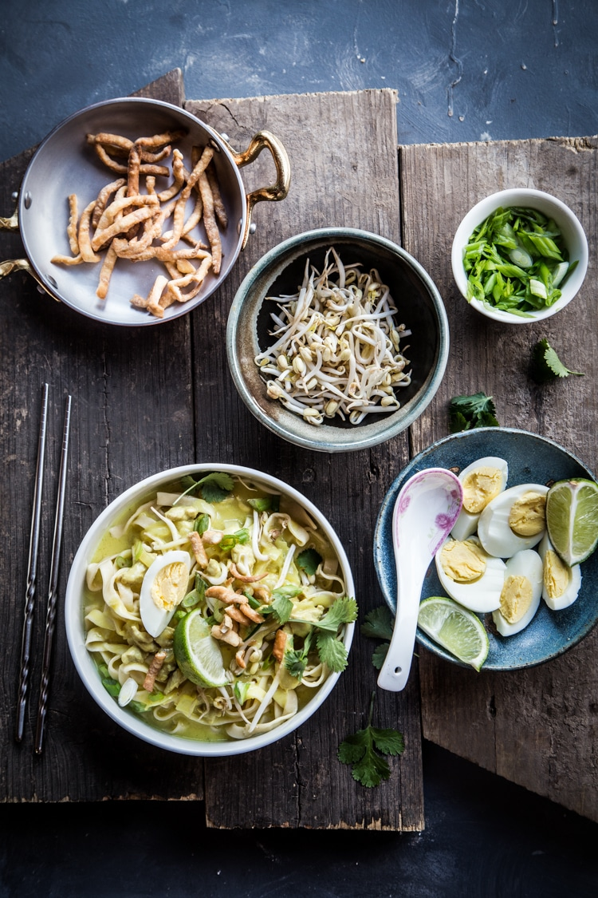

Coconut Chickpeas Noodle Soups

Description
Ohn No Khao Swe is Burmese noodle soup served in coconut broth slightly thickened with chickpeas (besan) flour
and topped with crunchy fried egg noodle strips. So simple to make and incredibly satisfying! Don’t take my
words for it. Try it!
This coconut noodle soup from Myanmar or known as ohn-no khao swe is not only a perennial favorite in Myanmar, it
has become our favorites as well. The soup is made of coconut milk, which made it very creamy and tasty and
thickened with a chickpea flour or known as besan flour (common in Indian cooking too). Some said that the Thai
version of Khao Soi is originated from Myanmar.
This chickpea flour gives the soup a wonderful body. The noodles are then topped with deep-fried egg noodles,
which gives a wonderful contrast in texture when you eat the whole dish. Something so simple, yet very
satisfying and tasty. When I was invited to a party by my Burmese friend and her mom made ohn-no khao swe, I was
beyond thrilled to see that!
I used homemade egg noodles and mine is a wider cut (I used fetuccine cut). Recipe is adapted from Burma: Rivers
of Flavor by Naomi Duguid
Ingredients
- 1 lb of fresh egg noodles, blanched in boiling water
- 2 lbs boneless skinless chicken thighs, cubed
- 6 Tbsp fish sauce
- 1/4 cup oil
- 1 large onion (diced)
- 4 cloves garlic (peeled and grated)
- 1/2 Tbsp fresh ginger (peeled and grated)
- 1/2 Tbsp turmeric powder
- 1 Tbsp chili flakes
- 1/2 cup chickpea flour or besan flour or gram flour + 1/2 cup water
- 6 cup chicken stock
- 1 1/3 cups coconut milk
Garnishes and condiments
- 4 hard-boiled eggs, peeled and sliced
- 2 green onions (thinly sliced)
- 1 medium onion, finely sliced
- 1/2 cup chopped coriander leaves
- 2 limes, quartered
- 1/2 cup chili flakes
- 1 cup fresh bean sprouts (blanch in hot water briefly if you prefer, I like them raw)
- 12 oz (350g) fresh egg noodles, deep-fried in oil until crispy, drained on paper towel, cooled and crumbled
by hand into bite-size pieces
- Fish sauce
Steps
- Marinate chicken with fish sauce for at least 15 minutes. Heat oil in large pot, saute onion, garlic, ginger
and turmeric for 5 minutes. Stir in chicken and chili flakes. Cover and cook over medium-low heat for 10
minutes. Stir occasionally to prevent chicken sticking to pot. Meanwhile, add chickpea flour to water and
whisk to remove lumps
- Add chicken stock to the pan and bring to the boil. Reduce heat, cover and simmer for a further 10 minutes
and the chicken is cooked through. Add coconut milk and continue to simmer for another 10 minutes.Stir in
chickpea flour paste until the soup thickens slightly
- Arrange each garnishing item on a separate plate on the table around a central bowl of chicken and coconut
chickpeas soup. To serve, take a portion of fresh noodles and a generous helping of soup, add a little of
each garnishing (a dash of fish sauce if desired)